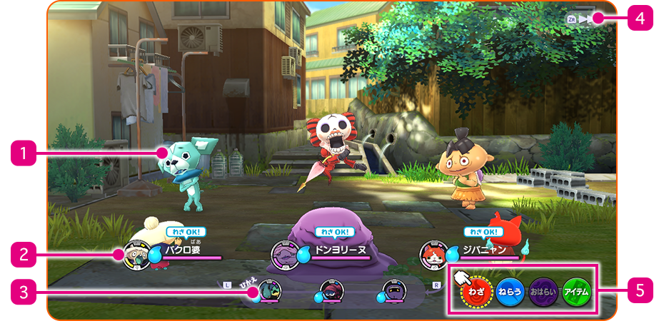
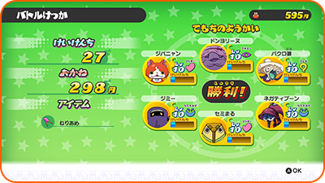
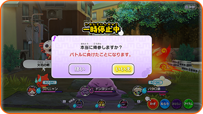

Combates: Desarrollo
Si tocas el símbolo de un Yo-kai cuando estés de paseo por la ciudad, o si uno aparece mientras estás explorando con tu lente, se iniciará un combate.
Empezar a combatir
Antes de empezar a luchar, puedes mover a tus Yo-kai hacia el frente o hacia atrás, así como usar objetos. El combate empezará una vez que hayas utilizado un objeto o seleccionado "¡LUCHA!".
Pantalla de combate

- 1Yo-kai enemigos
- 2Amigos Yo-kai al frente de tu rueda Yo-kai
La barra que se encuentra debajo del nombre de cada Yo-kai indica sus PV, los cuales disminuyen cuando los Yo-kai reciben ataques. Si los PV se agotan, los Yo-kai se desmayarán. El icono es el animámetro, que se va rellenando de manera gradual. Una vez que esté lleno, podrás usar un animáximum.
- 3Rueda Yo-kai
- Muestra la formación de tus amigos Yo-kai. Los tres que se encuentren en la parte superior formarán el frente a la hora de luchar contra el enemigo. Acontinuación, podrás preparar a los tres Yo-kai de la parte inferior para que pasen al frente en el momento adecuado pulsando L / R.
- 4Acelerar el combate
-
Pulsa ZR para aumentar la velocidad del combate. Vuelve a pulsarlo para recuperar la velocidad normal.
- 5Opciones
-
Las cuatro opciones que puedes seleccionar durante un combate son: animáximum, purificar, objetivo y objetos.
Unidad
Si tu línea frontal cuenta con Yo-kai de la misma tribu juntos, ¡se creará una unidad! Cada tribu tiene efectos de unidad diferentes. Para formar una unidad son suficientes dos Yo-kai, pero si los tres Yo-kai de la línea frontal pertenecen a la misma tribu, ¡la unidad será aún más fuerte!
Normas de combate
Los Yo-kai que se encuentren en tu rueda Yo-kai participarán en el combate. Los tres que se encuentren al frente serán los que luchen activamente contra los enemigos. Utiliza las opciones para dar órdenes a tus Yo-kai y cambia de Yo-kai cuando lo estimes necesario.
Acciones de los amigos Yo-kai
Los Yo-kai atacarán y utilizarán su técnica de manera automática. Las acciones que realicen variarán en función de su carácter.
Terminar un combate
Ganarás cuando hayas derrotado a todos los Yo-kai enemigos. Al ganar un combate, recibirás puntos de experiencia y dinero, así como objetos. Puede que algunos de los Yo-kai a los que venzas quieran entablar amistad contigo.

Subir de nivel
Los Yo-kai subirán de nivel tras conseguir un número determinado de puntos de experiencia. Los atributos, como la fuerza y el espíritu, aumentarán cuando el Yo-kai suba de nivel.
Huir de un combate
Podrás huir de un combate utilizando un muñeco de trapo.
※ No obstante, hay ciertos enemigos de los que no puedes escapar.
Rendirse
Pulsa el botón + para abrir el menú de pausa y selecciona "Rendirse"para abandonar el combate de inmediato. Hacer esto contará como una derrota.

Si pierdes
Si todos tus Yo-kai aliados son derrotados, perderás. Si pierdes un combate, regresarás a un lugar cercano.
Espiritación
Durante un combate, otros Yo-kai enemigos o amigos pueden espiritar a tus Yo-kai. Si los efectos de la espiritación son malos, utiliza la opción "Purificar" para deshacerte de ellos.
| Aumenta la FUE. | |
| Aumenta la DEF. | |
| Aumenta el ESP. | |
| Aumenta la VEL. | |
| Aumenta todos los atributos. | |
| Restaura PV gradualmente. | |
| Provoca al enemigo y atrae sus ataques. | |
| Resulta complicado ser fijado como objetivo. | |
| Reduce la FUE. | |
| Reduce la DEF. | |
| Reduce el ESP. | |
| Reduce la VEL. | |
| Reduce todos los atributos. | |
| Los PV se reducen gradualmente. | |
| Impide al Yo-kai actuar en ciertas ocasiones. | |
| Causa confusión y es probable que el Yo-kai ataque a los aliados. | |
| Hace que los Yo-kai tiren dinero. ¡Ten cuidado de no perder el dinero que tanto te ha costado ganar! |